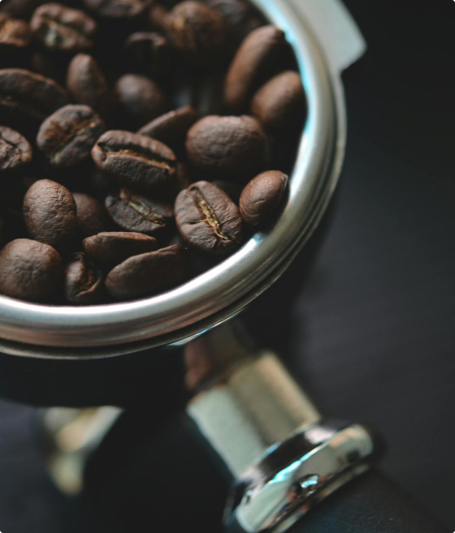

Café único
Sabor autêntico.
Aromato, onde a arte de cada grão se transforma em uma experiência única de café. Nossa paixão pela qualidade e autenticidade se reflete em cada xícara que servimos.
NOSSOS CAFÉS

Aromato, onde a arte de cada grão se transforma em uma experiência única de café. Nossa paixão pela qualidade e autenticidade se reflete em cada xícara que servimos.
NOSSOS CAFÉS
Os grãos de café arábica são conhecidos por produzir uma bebida de alta qualidade, muitas vezes elogiada por seu sabor suave e complexo. Eles geralmente apresentam notas variadas que podem incluir frutas, florais e sabores mais suaves, além de uma acidez mais pronunciada.
Os grãos de café arábica têm uma longa história e são originários das regiões montanhosas da Etiópia, na África. Acredita-se que tenham sido descobertos na região de Kaffa, o que deu origem ao nome "arábica". A planta arábica é conhecida por ser mais exigente em termos de altitude e condições climáticas, prosperando melhor em altitudes mais elevadas, geralmente entre 600 e 2.100 metros.
Os grãos de café robusta tendem a ter um sabor mais forte, mais amargo e ter uma maior concentração de cafeína em comparação com o arábica. Eles são frequentemente descritos como apresentando notas terrosas, amadeiradas e até mesmo achocolatadas. A acidez é geralmente mais baixa.
O café robusta, também conhecido como Coffea canephora, tem suas raízes na África Central, principalmente na região do Congo. Esta variedade de café é mais resistente a condições adversas, como altas temperaturas e altitudes mais baixas, em comparação com o arábica. Devido à sua resistência, o robusta é frequentemente cultivado em áreas de menor altitude, entre 200 e 800 metros.
Os grãos de café liberica são menos comuns e têm um perfil de sabor distinto. Eles são frequentemente descritos como apresentando sabores únicos, que podem incluir notas frutadas, florais e até mesmo picantes. A acidez pode variar, mas geralmente é mais baixa em comparação com o arábica.
Originária da África Ocidental, a planta de café liberica é nativa da região da Libéria, daí o seu nome. Ela também é encontrada em países como Costa do Marfim, Serra Leoa e Guiné. O café liberica é menos comum em comparação com o arábica e o robusta, mas tem uma presença distinta em algumas partes do mundo. A planta liberica é conhecida por ter grãos grandes e folhas largas em comparação com as outras variedades.